The Place For Japanese Recipes
Traditional Japanese cuisine with a modern twist.
Unagi is the Japanese word for freshwater eel. Unagi is an ingredient in Japanese cooking, often as kabayaki.

Gyoza are dumplings filled with ground meat, vegetables and wrapped in a thin dough. Also known as pot stickers.

Tempura is a Japanese dish consisting of either seafood, meat or vegetables that are thin battered and deep fried.